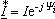

где  - комплексно-сопряжённый ток.
Таким образом, комплексная мощность цепи равна произведению комплексного напряжения цепи U на комплексно-сопряженный ток  :
:
| 2.5.8.2. Выражение комплексной мощности через комплексы напряжения и тока на зажимах цепи |
|||||||||
|
|||||||||
|
|
|||||||||